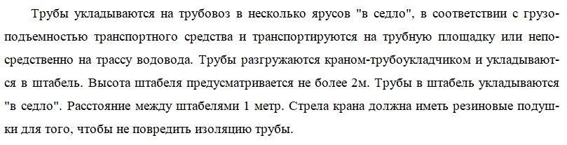
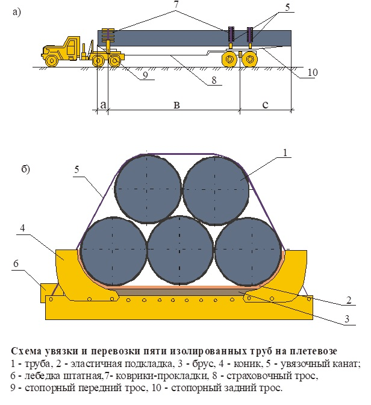
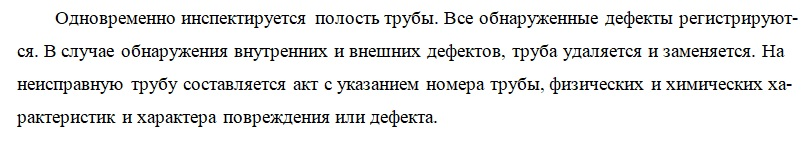
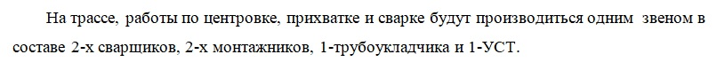
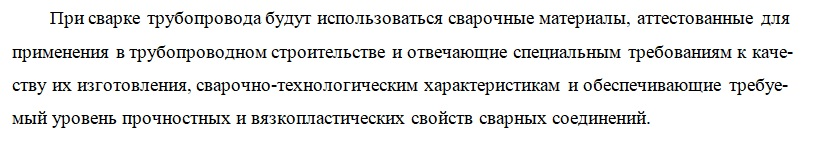

Сварка трубопровода

Самый ответственный и интересный момент при строительстве магистральных трубопроводов – это сварочные работы, когда отдельные трубы составляются в одну единую плеть.
Сварочные работы на магистральных трубопроводах
Раздел охватывает весь этап от разгрузки труб до проведения сварочных работ, объединяющих отдельные трубы в единую плеть.
Операции с трубами
Выполняется проверка наличия и соответствия сертификатов качества, формируется состав комиссии для входного контроля. Описывается инструкция по погрузке, креплению при транспортировке и разгрузке труб на строительной площадке.


Раскладка трубы вдоль трассы
Указывается технология раскладки, меры по предотвращению повреждения изоляции, способы транспортировки труб вдоль трассы.
При производстве работ могут возникнуть непредвиденные обстоятельства. Например, раннее таяние снега, отсутствие специализированной техники у арендодателя или несоответствие топографического плана реальной ситуации на объекте. Посмотрите фото, где строители справляются с разгрузкой трубы в условиях форс-мажора.
Инспекция труб
Определяются параметры осмотра на наличие повреждений и заводских дефектов, приводятся методы фиксации выявленных недостатков.

Сварочные работы
Подробно описывается состав сварочного звена, требования к допускным испытаниям сварщиков и методы проверки контрольных (допускных) стыков.

Дополнительно в разделе укажите информацию об организации рабочего места сварщиков, включая особенности обустройства при работе на открытой местности. Посмотрите фото, как выполнена защита рабочих и оборудования при строительстве магистрального трубопровода.
Сварочные материалы
Описываются требования к электродам, методы входного контроля, условия хранения и отбраковки материалов, а также подготовка электродов к сварке. Запрещается нарушение условий хранения и транспортировки сварочных материалов.

И не забываем указывать правила хранения и транспортировки электродов. Сварка – ключевой момент при строительстве линейных трубопроводов и материалы для самой ответственной работы необходимо беречь.